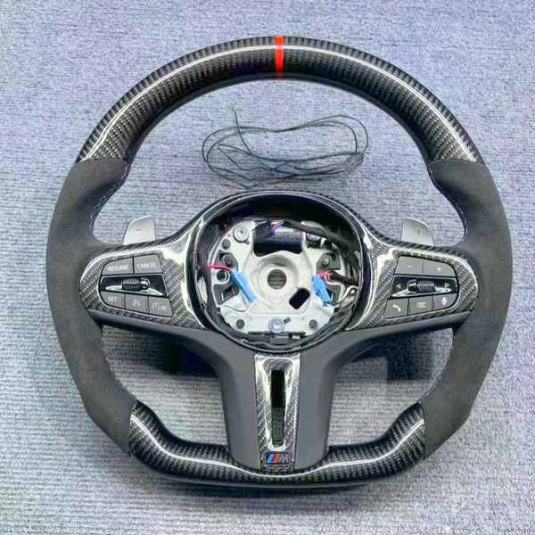

Руль на BMW X5 G05
X5 · G-серия
В Telegram откроется готовое сообщение: «Хочу руль на BMW G05».
Для BMW X5 G05 (X5) мы подбираем рули из G-серии: в каталоге их 66. Смотрите фотографии, сравнивайте комплектации и ориентируйтесь на цену: в подборке на этой странице она начинается от 31 900 ₽ и доходит до 57 900 ₽.
Рули этой серии изготавливаем под заказ, это около трёх недель. Подогрев добавляется к цене: доплата от 7 000 ₽ до 20 000 ₽ в зависимости от руля.
Не уверены, какой руль подойдёт? Отправьте менеджеру фото штатного руля, кузов и год — подскажем, что подойдёт. Крепление, кнопки и разъёмы проверяем перед заказом, а не после.
В подборке на этой странице самый доступный вариант — руль № G59 от 31 900 ₽, а самый дорогой — руль № G62 от 57 900 ₽. Каждый руль можно открыть, посмотреть все фотографии и комплектации.
Выбираете между кузовами G-серии? Посмотрите также X4 (G02) и X6 (G06): для них у нас отдельные страницы с подборкой рулей.
Подогрев, вибрацию и круиз-контроль можно выбрать в заявке, а можно собрать руль самому в конструкторе: материалы, цвет, строчка и отделка. Предоплата 3 000 ₽ (5 000 ₽ для рулей от 50 000 ₽), на руль даём гарантию 6 месяцев.
Как заказать: откройте понравившийся руль и нажмите «Заказать в Telegram» — в сообщении будут номер модели и выбранные функции. Отправьте его менеджеру и приложите фото вашего руля.
Рули для BMW X5 G05
Функции и доплаты
| Подогрев | доплата от 7 000 ₽ до 20 000 ₽ в зависимости от руля (разница между комплектациями «с подогревом» и «без») |
|---|---|
| Вибрация | выбирается в заявке; стоимость подтверждает менеджер |
| Круиз-контроль | выбирается в заявке; стоимость подтверждает менеджер |
Для отдельных рулей с карбоном или LED-экраном опции и цены указаны на странице самого руля. Установка нового руля сама по себе не добавляет подогрев, вибрацию или адаптивный круиз: выбор функции — пожелание к комплектации, возможность дооснащения обсуждается отдельно.
Доставка и оплата
- Доставка по России и в другие страны (отправляем во все страны, где есть СДЭК).
- Самовывоз в Одинцово, 24/7 — договоритесь с менеджером о времени.
- Предоплата 3 000 ₽ (5 000 ₽ для рулей от 50 000 ₽), остальное при получении.
- Срок: под заказ около трёх недель.
- Гарантия на руль — 6 месяцев.
Вопросы про руль на BMW X5 G05
Подойдёт ли руль на BMW X5 G05?
Мы подбираем руль под конкретный автомобиль: пришлите менеджеру кузов, год и фото штатного руля, и мы проверим крепление, кнопки и разъёмы до заказа.
Сколько стоит руль на BMW X5 G05?
Цены в каталоге начинаются от 19 900 ₽ за руль без подогрева, с подогревом — от 27 900 ₽. Точную сумму для вашей комплектации назовём в Telegram.
Сколько ждать руль?
Под заказ срок изготовления около трёх недель.
Нужна ли предоплата?
Да: 3 000 ₽, для рулей от 50 000 ₽ — 5 000 ₽. Остальное при получении.
Куда доставляете и можно ли забрать самому?
Отправляем по России и в другие страны, где есть СДЭК. Самовывоз — в Одинцово, 24/7, по договорённости с менеджером.
Появятся ли подогрев, вибрация и круиз, если их не было?
Выбор функции в каталоге — пожелание к комплектации. Установка нового руля сама по себе не добавляет подогрев, вибрацию или адаптивный круиз; возможность дооснащения нужно обсудить отдельно.